ゾンビをたおそう
🎯 この章でできるようになること
- オブジェクト変数で、ゾンビ1体ずつに体力を持たせられる
- 3Dの当たり判定（Collision in 3D）を使える
- タイマーで、何秒かごとにゾンビをわかせられる
- HP が 0 になったら、ゲームをやり直しにできる
- 式を使って、たおすほどゾンビが早くわいてくるようにできる
- 目標の数だけたおすと、ボスが出てくるしくみを作れる
5-1. この章で作るしくみ
ゾンビは弾を3発当てるとたおれます。
トラックでひいても、たおせます。
たおした数を「Kills」として画面に出し、3秒ごとに新しいゾンビがわいてくるようにします。
そのあと、たおすほどわいてくる間かくが短くなるようにします。
最後に、ゾンビを20体たおすと大きなボスが出てきて、ボスをたおすとクリアの画面に進むようにします。
そのゾンビの体力を1へらす
Kills を1ふやす
ゾンビがトラックに近い
Kills を1ふやす
ランダムな向きを決めて、そこにゾンビを作る
ボスはまだ出ていない
主人公から遠い場所にボスを作る
「ボスが来た！」と画面に出す
乗っていない
トラックでボスをひいている
5-2. 変数と文字を用意しよう
シーンエディターで、一覧の Zombie をクリックします。
左の「オブジェクト変数」の右の、四角から矢印が出たマークを押します。
「Zombie を編集」の画面の「変数」タブが開きます。
「変数を追加」を押して、名前を Health、型は「数値」のまま、値を 3 にして「適用」。
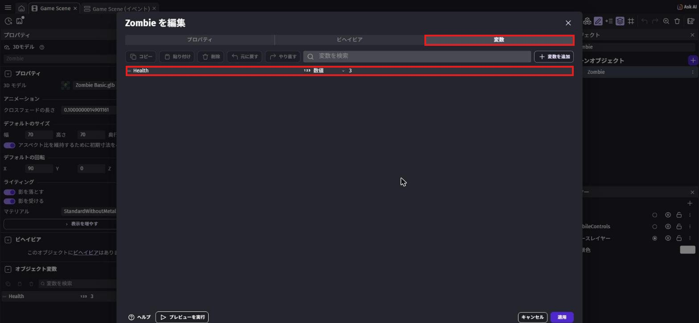
Health = 3（型は数値）（赤枠）第4章の PlayerHealth は「シーン変数」で、ゲーム全体に1つだけです。
Health はゾンビ1体ずつが持っているので、1体目は残り1、2体目は残り3、のように別々に数えられます。
シーンの何もないところをクリックして、「シーン変数」の編集画面（「Game Scene 変数」）を開きます（第4章と同じ）。
「変数を追加」で次の2つを作ります。
どちらも型は「数値」、値は 0 のままでOK。
Kills… たおしたゾンビの数SpawnAngle… 新しいゾンビをわかせる向き
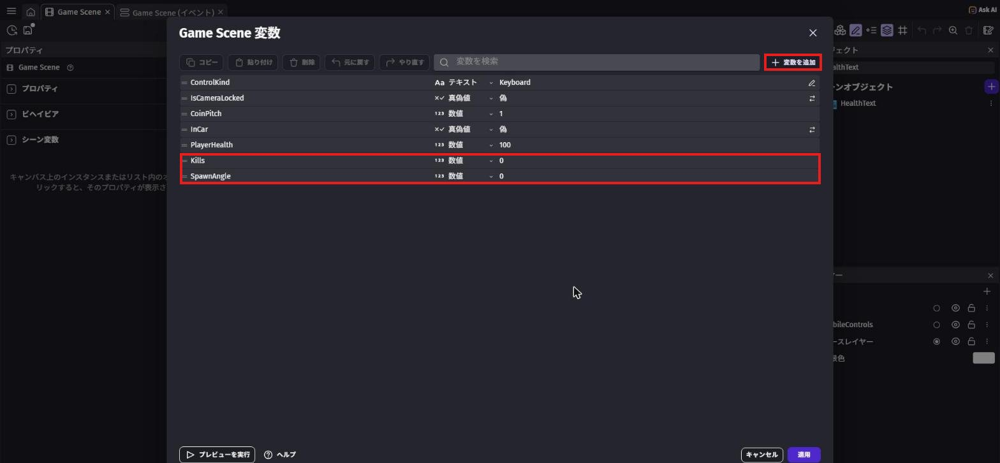
Kills と SpawnAngle を追加（赤枠）一覧の HealthText の「⋮」から「複製」（コピーを作る）を選びます。
「HealthText2」ができて名前を入力できる状態になるので、KillText と入力して Enter。
左のプロパティの「テキスト」の欄を Kills: 0 に書きかえます。
次に、「レイヤー」パネルで UI の「○」を●にしてから、KillText の「⋮」→「シーンにインスタンスを追加」でシーンに置きます。
置いた文字をクリックして、X を 20、Y を 160 にします（HP の下）。
最後に、●を「ベースレイヤー」にもどしておこう。
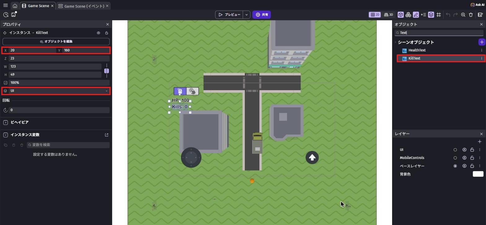
ドラッグしても置けないとき
一覧からシーンへのドラッグがうまくいかないことがあります。
そのときは「⋮」→「シーンにインスタンスを追加」を使うと、画面のまん中に置かれます。
5-3. 弾でたおそう
イベントシートで、新しいグループ Battle（たたかい）を作り、Shift + D で中にイベントを作ります。
「条件を追加」を押し、左の一覧から Bullet を選びます。
まん中の「衝突」の中にある「Collision in 3D」（3Dでぶつかった）を選びます（英語のまま表示されます）。
すぐ下の「衝突」は2D用なので、まちがえないようにしよう。
右の「Other object」は Zombie。
「3D機能」の欄は自動で「Object3D」になるので、さわらなくてOK。
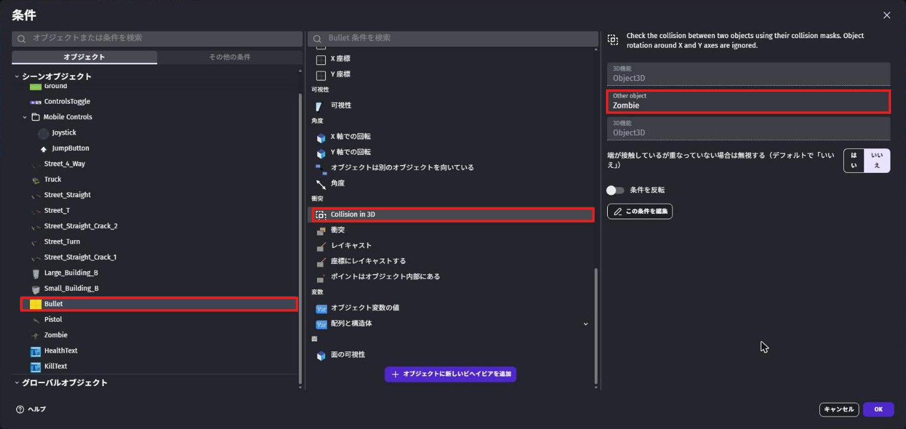
アクションは2つ。
- 「オブジェクトを削除する」で
Bullet - 左の一覧から
Zombieを選び、まん中の「変数」の中の「オブジェクト変数の値を変更」。
変数はHealth、演算子は「－（引く）」、値は1
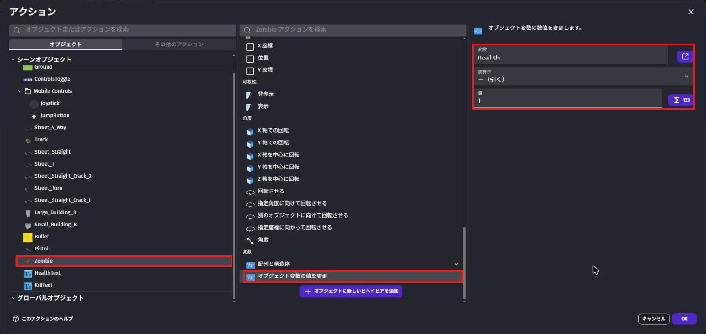
拡張機能の条件なので、日本語の画面でも名前は英語のままです。
高さ（Z）もふくめて、本当にぶつかっているかを調べてくれます。
ふつうの「衝突」は上から見た形だけで調べるので、3Dのゲームではこちらを使います。
Shift + A で新しいイベントを作ります。
条件は、左の一覧から Zombie を選び、まん中の「変数」の中の「オブジェクト変数の値」。
変数は Health、テスト記号は「≦（以下）」、比較する値は 0。
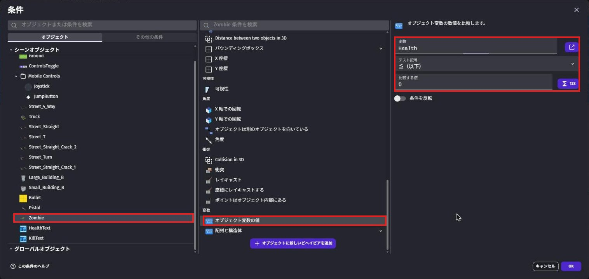
アクションは2つ。
- 「オブジェクトを削除する」で
Zombie - 「その他のアクション」タブの「変数の値を変更」で、変数
Kills、演算子「＋（足す）」、値1
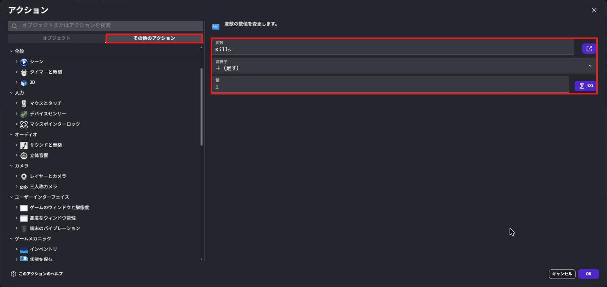
5-4. トラックでたおそう
Shift + A で新しいイベントを作ります。
条件は2つ。
- 「変数の値」で
InCarが 真（乗っている） - 左の一覧で
Zombieを選び、まん中のいちばん上の「2つのオブジェクト間の距離」。
オブジェクト2 はTruck、距離は80
アクションは、ステップ5と同じ2つ（Zombie を消す、Kills に1を足す）です。
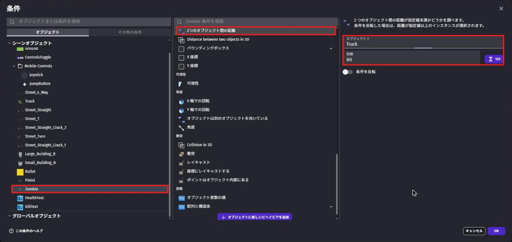
同じアクションを何回も作るのがめんどう
ステップ5のアクション2つを、Shift を押しながらクリックして両方選び、Ctrl + C（Mac は ⌘ + C）でコピーできます。
ステップ6のイベントのアクション側をクリックして Ctrl + V（Mac は ⌘ + V）で貼りつけよう。
5-5. ゾンビをわかせよう
Shift + A で新しいイベントを作ります。
条件は タイマー で検索して、シーンタイマーの経過時間を比べる条件「シーンタイマーの値」（その他の条件 › タイマーと時間）を選びます。
タイマーの名称は "SpawnTimer"（ダブルクォーテーションもつける）、テスト記号は「≧（以上）」、時間（秒）は 3。
この 3 は、あとの 5-8 で式に変えます。
まずは 3 秒のまま作って、動くことを確かめよう。
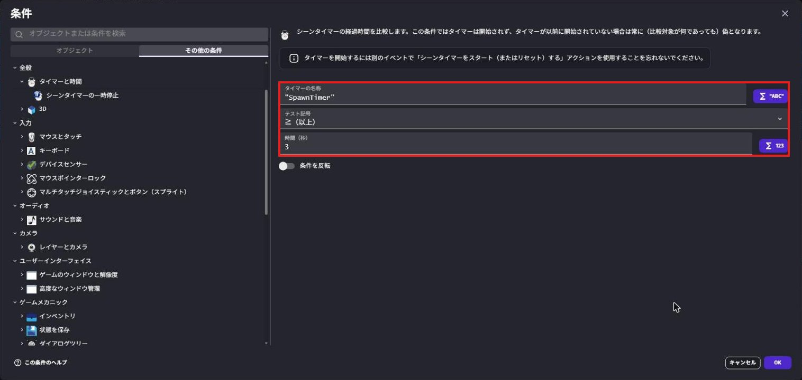
"SpawnTimer" が 3 秒以上（赤枠）アクションは3つです。
タイマーで検索 →「シーンタイマーをスタート（またはリセット）する」、名前は"SpawnTimer"（0にもどして、また数えはじめる）- 「変数の値を変更」で、変数
SpawnAngle、演算子「＝（代入）」、値は下の式 - 左の一覧で
Zombieを選び、まん中のいちばん上の「オブジェクトを生成する」（生成で検索してもOK）。
X 座標と Y 座標は下の式、レイヤーは「ベースレイヤー」のまま
RandomInRange(0, 359)Player.X() + XFromAngleAndDistance(SpawnAngle, 700)Player.Y() + YFromAngleAndDistance(SpawnAngle, 700)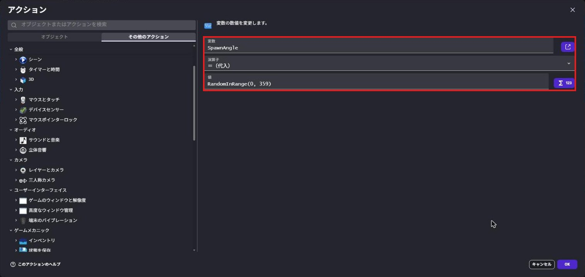
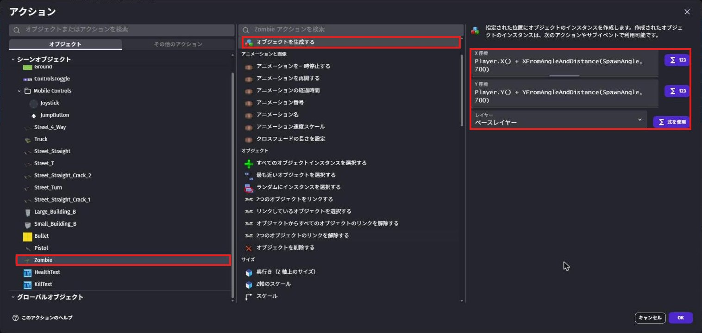
第3章で使った XFromAngleAndDistance と組み合わせると、「主人公を中心にした円の上の、どこか1か所」になります。
だから、ゾンビはいつも主人公から同じくらいはなれた、いろいろな方向からやってきます。
タイマーは、スタートさせないと数えはじめません。
Shift + A で新しいイベントを作り、条件は シーンが始まった で検索 →「シーンが始まった」。
アクションは「シーンタイマーをスタート（またはリセット）する」で "SpawnTimer"。
5-6. Kills と、やられたときのしくみ
Shift + A で新しいイベントを作ります。
条件はなし。
アクションの画面で、左の一覧から KillText を選び、いちばん上の「テキスト」を選びます。
演算子は「＝（代入）」のまま、テキストの欄に次の式を入れます（第4章の HP と同じやり方）。
"Kills: " + ToString(Kills)Shift + A で新しいイベントを作ります。
条件は「変数の値」で PlayerHealth、テスト記号は「≦（以下）」、比較する値は 0。
アクションは シーンを変更 で検索 →「シーンを変更する」、新しいシーンの名前は一覧から「Game Scene」。
今のシーンをもう一度始めるので、最初からやり直しになります。
第6章で「GAME OVER」の画面を作ったら、ここをその画面に進むように変えます。
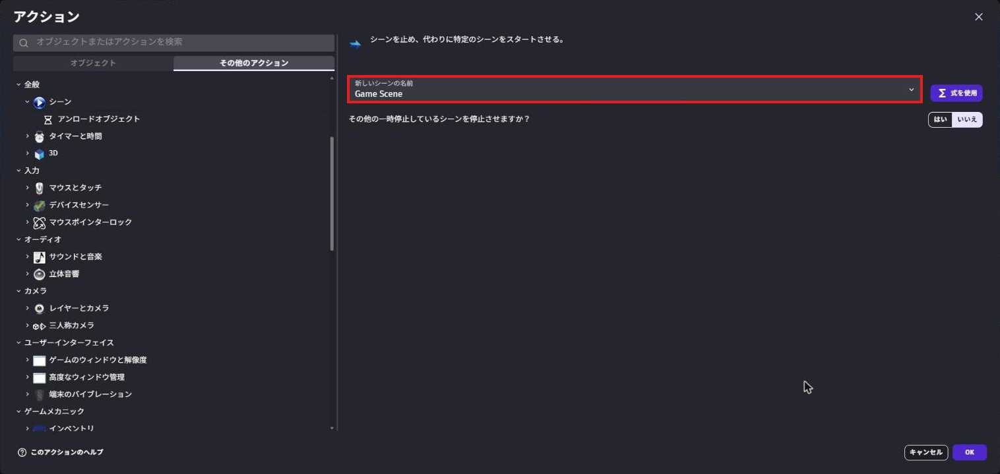
5-7. たたかってみよう
保存してから「プレビュー」を押します。
ゾンビに弾を3発当てるとたおれて、左上の Kills がふえます。
トラックに乗って、ゾンビをひいてみよう。
3秒ごとにゾンビがふえていくので、どこまでたおせるかチャレンジ！

写真は、主人公を人の形に入れかえる前に撮ったもの（オレンジのカプセルが主人公）
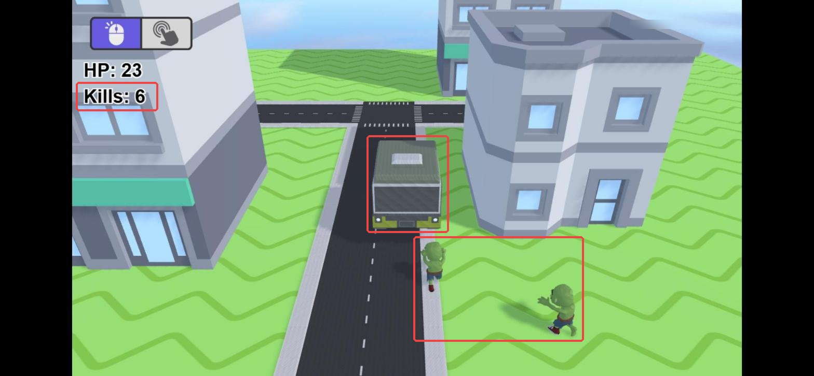
5-8. だんだんむずかしくしよう
ずっと3秒ごとだと、なれてくると少しかんたんです。
たおせばたおすほど、ゾンビがわいてくる間かくが短くなるようにします。
Battle グループの「シーンタイマー "SpawnTimer" ≥ 3 秒」の条件をダブルクリックして開きます。
「時間（秒）」の 3 を消して、下の式を入れて「OK」。
max(1, 3 - Kills * 0.08)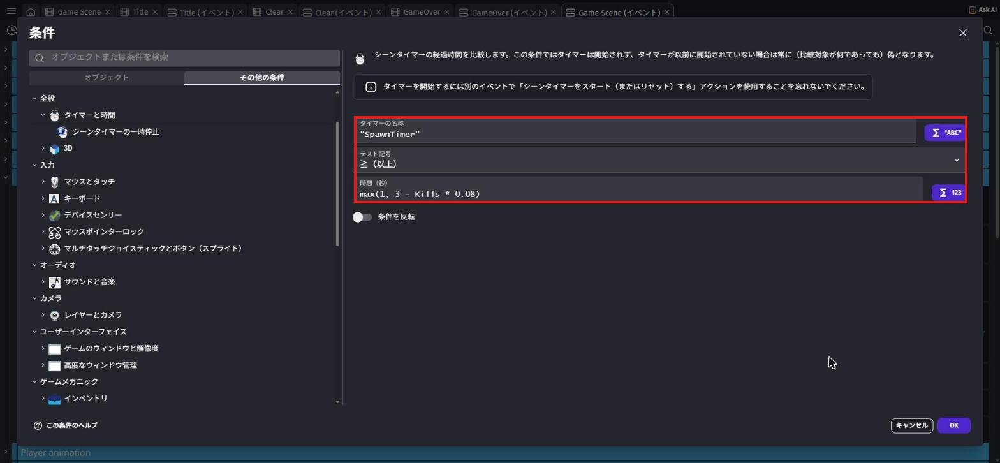
max(1, 3 - Kills * 0.08) にする（赤枠）。上のタブの Title などのシーンは、第6章で作るもの
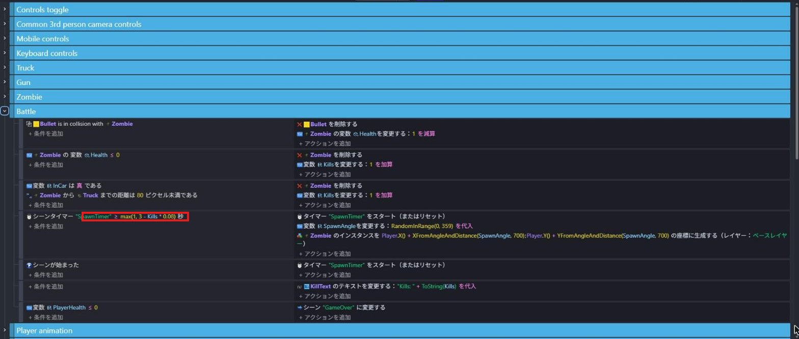
3 - Kills * 0.08 は、たおすたびに 0.08 秒ずつ短くなる時間。0体なら3秒、10体なら2.2秒、20体なら1.4秒です。
ただ、このままだと25体をこえると1秒より短くなり、もっとたおすと0秒やマイナスになって、ゾンビがわきすぎてしまいます。
max(1, …) は「2つのうち大きいほう」を選ぶ式なので、いちばん短くても1秒で止まります。
Battle グループの中が、下の写真と同じ7つのイベントになっていればOK。
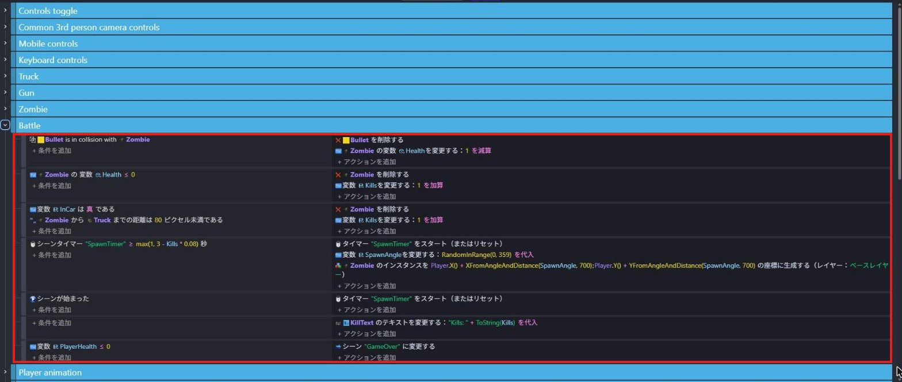
写真は完成後のプロジェクトで撮ったので、いちばん下が「シーン "GameOver" に変更する」になっている。
ここは第6章で変える部分なので、今は「シーン "Game Scene" に変更する」のままでOK。
下の Player animation は、第2章で作ったグループ
5-9. ボスの準備をしよう
ゾンビを20体たおすと、大きなボスが出てくるようにします。
まずは、目標の数を入れる変数、画面の文字、ボスのオブジェクトを用意します。
シーンの何もないところをクリックして、「シーン変数」の編集画面（「Game Scene 変数」）を開きます。
「変数を追加」で次の2つを作って、「適用」を押します。
Goal… 型は「数値」、値は20（ボスが出るまでにたおす数）BossSpawned… 型は「真偽値」、値は「偽」のまま（ボスをもう出したか）
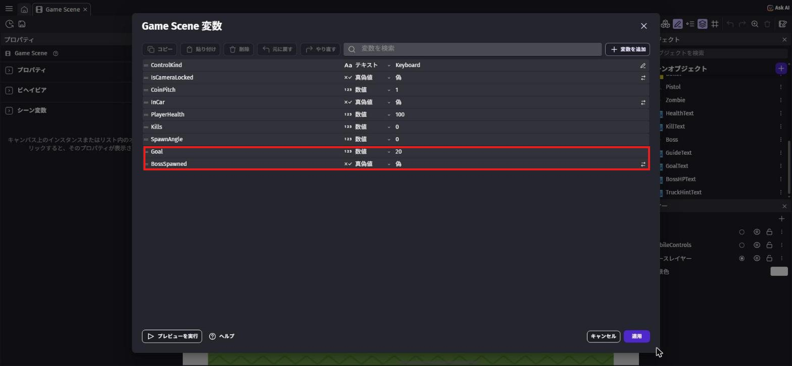
Goal（数値・20）と BossSpawned（真偽値・偽）を追加（赤枠）一覧の HealthText の「⋮」→「複製」で文字のオブジェクトを作り、名前を GoalText にします（ステップ3の KillText と同じやり方）。
左のプロパティで、次のようにします。
- テキスト:
ゾンビを20体たおすと、ボスが出てくる！ - フォントサイズ:
30 - 色:
255;235;80（黄色）
同じように HealthText を複製して BossHPText を作ります。
- テキスト:
BOSS HP: 40 - フォントサイズ:
36 - 色:
255;80;80（赤）
レイヤーパネルで UI に●をつけてから、2つともシーンに置きます。
GoalText は X 220・Y 22（画面の上）、BossHPText は X 990・Y 20（右上）にします。
最後に、●を「ベースレイヤー」にもどしておこう。
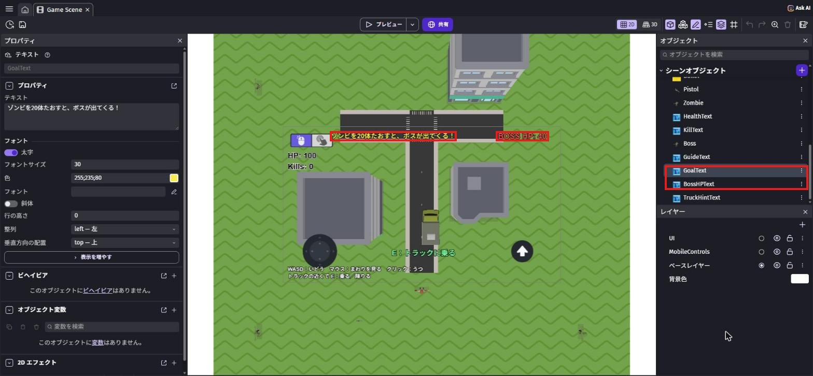
左は GoalText のプロパティ。
写真は完成後のプロジェクトで撮ったので、左下の操作説明（第6章で作る）も写っている
一覧の Zombie の「⋮」→「複製」を選びます（第1章の「アセットの交換」と同じメニューの中にあります）。
「Zombie2」ができて名前を入力できる状態になるので、Boss と入力して Enter。
Boss をクリックして、左の「デフォルトのサイズ」の 幅・高さ・奥行き を全部 210 にします（ゾンビの3倍）。
左の「オブジェクト変数」には、複製でコピーされた Health（3）があるので、値を 40 にします。
ボスはイベントで作り出すので、シーンには置かなくてOK。
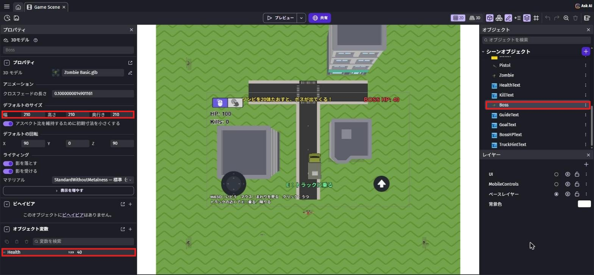
ボスをたおしたら「Clear」というシーンに進むようにします。
Clear の中身（クリアの画面）は第6章で作りますが、イベントで選べるように、先にシーンだけ作っておきます。
左上の「≡」（メニュー）を押して、プロジェクトマネージャーを開きます。
「シーン」の右の「＋」を押すと、新しいシーンができます。
できたシーンの「⋮」→「名前の変更」で、名前を Clear にします。
終わったら、上のタブで「Game Scene (イベント)」にもどります。
くわしいやり方は、第6章の 6-2 にも写真つきでのっています。
先に第6章の 6-2 の手順1をやっておいてもOK。
5-10. ボスのイベントを作ろう
イベントシートで、新しいグループ Boss を作り（「+ 追加...」→「イベントグループ」）、Shift + D で中にイベントを作ります。
第4章のゾンビや、この章の Battle とよく似たイベントです。
1つ目は、BOSS HP の文字を最初は見えなくしておくイベントです。
条件は「シーンが始まった」、アクションは「非表示」で BossHPText。
2つ目（Shift + A）が、ボスを出すイベントです。
条件は2つ。
- 「変数の値」で
Kills、テスト記号は「≧（以上）」、比較する値はGoal - 「変数の値」で
BossSpawnedが「偽」
アクションは5つ。
- 「変数の値を変更」で
BossSpawnedを「真に設定」 - 「変数の値を変更」で
SpawnAngleを「＝（代入）」でRandomInRange(0, 359) - 左の一覧で
Bossを選び、「オブジェクトを生成する」。
X 座標と Y 座標は下の式、レイヤーは「ベースレイヤー」のまま - 「表示」で
BossHPText - GoalText の「テキスト」を、下の文字にする
Player.X() + XFromAngleAndDistance(SpawnAngle, 900)Player.Y() + YFromAngleAndDistance(SpawnAngle, 900)"ボスが来た！ たおせばクリア！"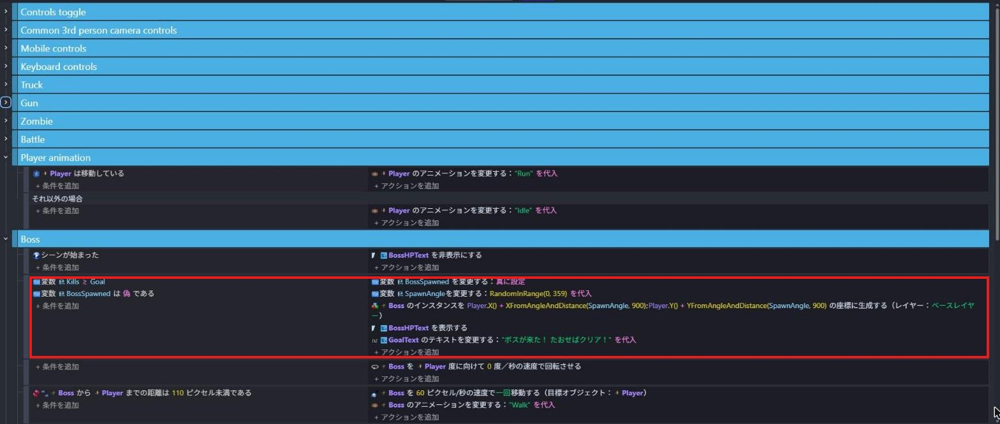
写真の上のほうの Player animation は、第2章で作ったグループ
そのままだと、毎回（1秒に60回くらい）ボスが作られて、ボスだらけになってしまいます。
ボスを作ったときに BossSpawned を「真」にして、条件に「BossSpawned が偽」を入れておくと、ボスは1回だけ作られます。
第4章のゾンビと同じ作り方で、3つのイベントを作ります。
- 条件なし →「別のオブジェクトに向けて回転させる」で、
BossをPlayerのほうへ、角速度0 - 「2つのオブジェクト間の距離」で
BossとPlayer、距離110、「条件を反転」を ON →「オブジェクトに向かって移動するフォースを追加する」でBossをPlayerへ速度60（瞬間的）、「アニメーション名」でBossを「Walk」 - 「2つのオブジェクト間の距離」で
BossとPlayer、距離110（反転は OFF）と、「変数の値」でInCarが 偽 →「アニメーション名」でBossを「Punch」、「変数の値を変更」でPlayerHealthを「－（引く）」で下の式
35 * TimeDelta()ゾンビ（12）よりずっと強いパンチです。
ボスは大きいので、近いと判断する距離も 110 にしています。
弾が当たったときのイベントは、ステップ4と同じ作り方です。
条件は、左の一覧で Bullet を選び、「Collision in 3D」で Other object は Boss。
イベントシートには、日本語の画面でも英語のまま「Bullet is in collision with Boss」と表示されます。
アクションは「オブジェクトを削除する」で Bullet と、Boss の「オブジェクト変数の値を変更」で Health を「－（引く）」で 1。
トラックでひいたときのイベントも作ります。
条件は「変数の値」で InCar が 真 と、「2つのオブジェクト間の距離」で Boss と Truck、距離 160。
アクションは Boss の「オブジェクト変数の値を変更」で Health を「－（引く）」で下の式。
8 * TimeDelta()ゾンビは1回ひくとたおせましたが、ボスはトラックでひき続けている間、少しずつ体力がへっていきます。
BOSS HP の文字を変えるイベントを作ります。
条件は「変数の値」で BossSpawned が 真。
アクションは BossHPText の「テキスト」で、下の式を入れます。
"BOSS HP: " + ToString(max(0, ceil(Boss.Variable(Health))))最後に、ボスをたおしたときのイベントです。
条件は、左の一覧で Boss を選び、「オブジェクト変数の値」で Health、テスト記号は「≦（以下）」、比較する値は 0。
アクションは「シーンを変更する」で、新しいシーンの名前は一覧から「Clear」。
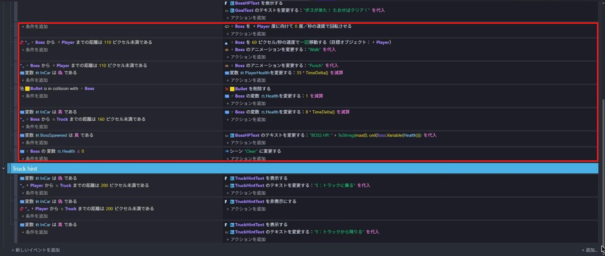
下に見える Truck hint は、第2章で作ったグループ
Boss.Variable(Health) は、ボスが持っているオブジェクト変数 Health を、式の中で読み出す書き方。トラックでひくと Health は 39.87 のように細かくへるので、
ceil() で小数を切り上げて整数にします。max(0, …) は、マイナスの数が出ないようにするためです。
5-11. ボスとたたかってみよう
保存してから「プレビュー」を押します。
ゾンビを20体たおすと、上の文字が「ボスが来た！ たおせばクリア！」に変わり、大きなボスが出てきます。
右上の BOSS HP が 0 になるまでたおすと、Clear のシーンに切りかわります。
今は Clear のシーンが空っぽなので、何もない画面になればOK（クリアの画面は第6章で作ります）。
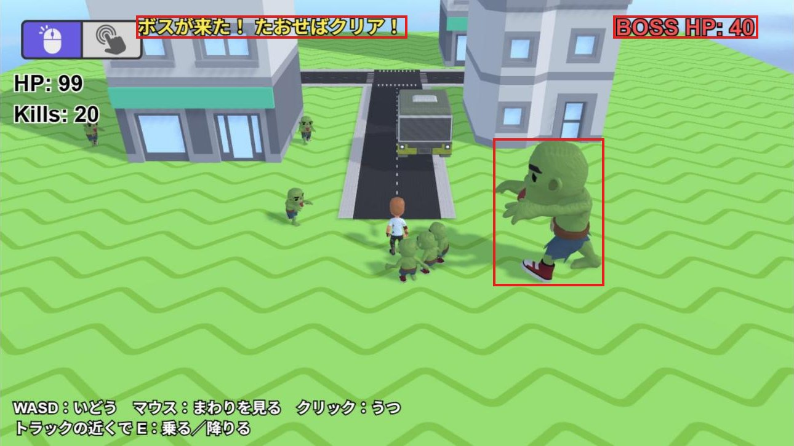
上の文字が変わり、右上に BOSS HP が出る（上の赤枠）。
左下の操作説明は、第6章で作るもの
20体たおすのは大変なので、ためすときはシーン変数の Goal を 2 などにすると早く確かめられます。
確かめ終わったら、Goal を 20 にもどしておこう。
💪 やってみよう
ゾンビの体力（3）、わく距離（700）、ボスの体力（40）や大きさ（210）を変えてみよう。
ボスが出るまでの数（Goal の 20）を変えて、ちょうどいいむずかしさにしてみよう。
ヒント
Goal を変えたら、GoalText の最初の文「ゾンビを20体たおすと、ボスが出てくる！」の数も同じに直そう。
わく間かくの式の 0.08 を大きくすると、早く1秒になります。
ボスを別のゾンビの見た目にしたいときは、Boss の「⋮」→「アセットの交換」が使えます。
5-12. 🚨 つまずきポイント集
弾が当たってもゾンビがたおれない
原因: Health を Zombie の「オブジェクト変数」ではなく、シーン変数に作ってしまった。
直し方: 一覧の Zombie をクリックして、左の「オブジェクト変数」に Health（3）があるか確かめよう。
ゾンビがわいてこない
原因: タイマーをスタートするイベント（ステップ9）がない、またはタイマーの名前がちがう。
直し方: 3か所の "SpawnTimer" が、大文字・小文字までまったく同じか確かめよう。
トラックでひいてもたおせない
原因: InCar の条件が「偽」になっている。
直し方: ステップ6の条件をダブルクリックして、「真」を選びなおそう。
Kills の文字がカメラといっしょに動く・見えなくなる
原因: KillText を置いたとき、●が「ベースレイヤー」のままだった。
直し方: 置いた KillText をクリックして、左のレイヤーの欄を「UI」に変えよう。
20体たおしてもボスが出てこない
原因: Boss のイベントの条件がちがう、または BossSpawned が最初から「真」になっている。
直し方: ステップ19の条件が「Kills ≥ Goal」と「BossSpawned は 偽 である」になっているか確かめよう。
「Game Scene 変数」で、BossSpawned の値が「偽」になっているかも見てみよう。
ボスがたくさん出てくる
原因: ボスを出すイベントに「BossSpawned を真に設定」のアクションがない。
直し方: ステップ19のアクションのいちばん上に、「変数の値を変更」で BossSpawned を「真に設定」を入れよう。
「シーンを変更する」の一覧に Clear が出てこない
原因: Clear のシーンをまだ作っていない、または名前がちがう。
直し方: ステップ18のとおり、プロジェクトマネージャーで Clear のシーンを作ろう。
名前は大文字の C で始まる Clear です。
BOSS HP の文字が、ボスが出る前から見えている
原因: 「シーンが始まった」で BossHPText を非表示にするイベントがない。
直し方: ステップ19の1つ目のイベントを作ろう。
5-13. ✅ チェックリスト
全部チェックできたら第5章クリア！
🎉 次回は最終回！
タイトル・ゲームオーバー・クリアの画面を作って、ゲームを1本に仕上げよう。
音や見た目も仕上げて、みんなに遊んでもらおう。